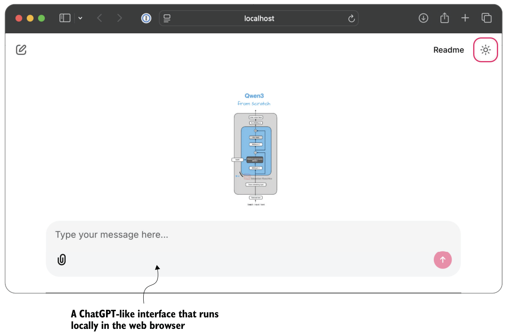

F.5.2Evaluating responses with a grading rubric
Using the query_model function, we can evaluate the responses generated by our model with a prompt that includes a grading rubric that asks the gpt-oss model to rate the target model’s responses on a scale of 1 to 5, using a correct answer as a reference. The prompt we use for this is shown in the following listing.
def rubric_prompt(instruction, reference_answer, model_answer):
rubric = (
"You are a fair judge assistant. You will be given an instruction, "
"a reference answer, and a candidate answer to evaluate, according "
"to the following rubric:\n\n"
"1: The response fails to address the instruction, providing "
"irrelevant, incorrect, or excessively verbose content.\n"
"2: The response partially addresses the instruction but contains "
"major errors, omissions, or irrelevant details.\n"
"3: The response addresses the instruction to some degree but is "
"incomplete, partially correct, or unclear in places.\n"
"4: The response mostly adheres to the instruction, with only "
"minor errors, omissions, or lack of clarity.\n"
"5: The response fully adheres to the instruction, providing a "
"clear, accurate, and relevant answer in a concise and efficient "
"manner.\n\n"
"Now here is the instruction, the reference answer, and the "
"response.\n"
)
prompt = (
f"{rubric}\n"
f"Instruction:\n{instruction}\n\n"
f"Reference Answer:\n{reference_answer}\n\n"
f"Answer:\n{model_answer}\n\n"
f"Evaluation: "
)
return promptThe model_answer in the rubric_prompt is intended to represent the response produced by our own model in practice. For illustration, I’ve hardcoded a plausible model answer here rather than generating it dynamically. Feel free to use the Qwen3 model we loaded in section F.2.1 to generate a real model_answer.
Next, let’s generate the rendered prompt for the Ollama model:
rendered_prompt = rubric_prompt(
instruction=(
"If all birds can fly, and a penguin is a bird, "
"can a penguin fly?"
),
reference_answer=(
"Yes, according to the premise that all birds can fly, "
"a penguin can fly."
),
model_answer=(
"Yes – under those premises a penguin would be able to fly."
)
)
print(rendered_prompt)The output is as follows:
You are a fair judge assistant. You will be given an instruction, a
reference answer, and a candidate answer to evaluate, according to the
following rubric:
1: The response fails to address the instruction, providing irrelevant,
incorrect, or excessively verbose content.
2: The response partially addresses the instruction but contains major
errors, omissions, or irrelevant details.3: The response addresses the instruction to some degree but is
incomplete, partially correct, or unclear in places.
4: The response mostly adheres to the instruction, with only minor
errors, omissions, or lack of clarity.
5: The response fully adheres to the instruction, providing a clear,
accurate, and relevant answer in a concise and efficient manner.
Now here is the instruction, the reference answer, and the response.
Instruction:
If all birds can fly, and a penguin is a bird, can a penguin fly?
Reference Answer:
Yes, according to the premise that all birds can fly, a penguin can
fly.
Answer:
Yes – under those premises a penguin would be able to fly.
Evaluation:Ending the prompt with "Evaluation: " incentivizes the model to generate the answer. Let’s see how the gpt-oss:20b model judges the response:
result = query_model(rendered_prompt, ollama_model)
print(result)The response is as follows:
**Score: 5**
The candidate answer directly addresses the question, correctly applies the
given premises, and concisely states that a penguin would be able to fly. It
is accurate, relevant, and clear.As you can see, the answer receives the highest score, which is reasonable because it is indeed correct.
This was a simple example of stepping through the process manually. We could take this idea further and implement a for loop that iteratively queries the model (such as the Qwen3 model from chapter 2 that we loaded in section F.2.1) with questions from an evaluation dataset, evaluates it via gpt-oss, and calculates the average score. By doing this for two models (such as the Qwen3 base and reasoning models), we could compare the models to each other.
Scoring intermediate reasoning steps with process reward models
Judge-based evaluations offer advantages over preference-based leaderboards, including scalability and consistency, because they do not rely on large pools of human voters. However, while leaderboards are usually based on human preference rankings, it is technically possible to outsource the preference-based rating behind these leaderboards to LLMs. Either way, LLM judges share weaknesses with human voters: results can be biased by model preferences, prompt design, and answer style. There is also a strong dependency on the choice of judge model and rubric, and they lack the reproducibility of fixed benchmarks.
appendix G Building a chat interface
The supplementary code repository for this book includes a small browser-based chat interface, built with the open source Chainlit Python package (https://github.com/Chainlit/chainlit). This ChatGPT-like interface allows us to interact with the various LLMs and reasoning models in this book, as shown in the screenshot in figure G.1. This interface can be useful when we want a more convenient way to interact with the models than typing prompts into a notebook cell or terminal.
Building upon the Chainlit library, the implementation of this interface is relatively straightforward. Instead of printing tokens to the terminal, we wrap the same model-loading and generation functions from the earlier chapters inside a small web application, which stays local on the computer and runs in a browser. In practice, this means that we can reuse the from-scratch Qwen3Model implementation and the chapter 2 streaming helper while letting Chainlit handle the browser UI and message events.
The book’s supplementary materials contain two variants of the interface in chG/01_main-chapter-code (https://github.com/rasbt/reasoning-from-scratch/tree/main/chG/01_main-chapter-code):
qwen3_chat_interface.pyis a single-turn interface.
qwen3_chat_interface_multiturn.pystores conversation history and supports multi-turn interactions.

In this appendix, we’ll walk through both versions. We’ll also discuss how to install Chainlit and how to download the scripts via the download_from_github helper from chapter 7.
G.1Installing Chainlit
Before running the chat interface, we first need to install Chainlit. This is the simplest option:
pip install chainlitIf you are using uv, this is the equivalent command:
uv add chainlitIf you are working directly inside the reasoning-from-scratch repository, Chainlit is also listed as an optional dependency in the project’s pyproject.toml. In that case, this is a convenient alternative:
uv sync --extra extraor
pip install -e ".[extra]"G.2Running the code as a script
Chainlit runs ordinary Python scripts. This is important, because Chainlit imports the script as a module and looks for special functions decorated with @chainlit.on_chat_ start and @chainlit.on_message, as you’ll see later.
This means that if you want to reuse the code shown in this appendix, you should place it into a .py file such as
qwen3_chat_interface.pyor
app.pyThen launch it from the terminal as follows:
chainlit run app.pyOr, if you are using uv, the command is
uv run chainlit run app.pyIn other words, while you can inspect the code in a notebook, the actual Chainlit application is expected to live in a standalone Python script.